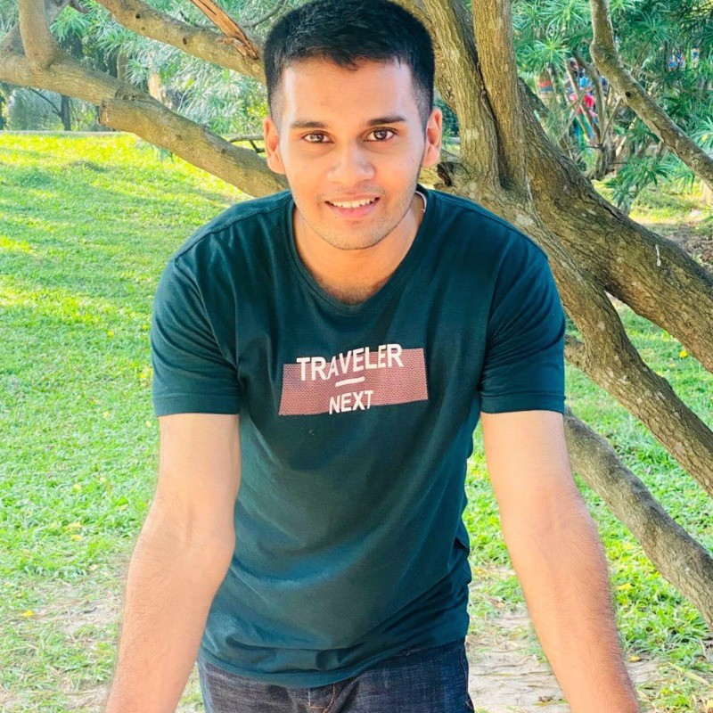
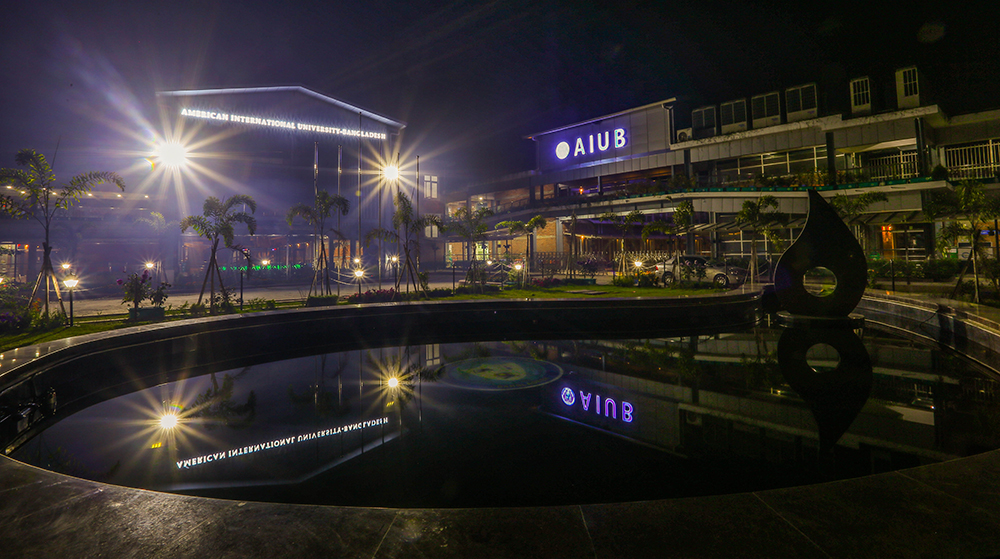
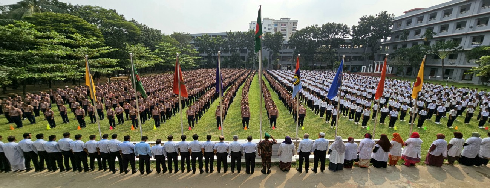

I am Mahmudul Morsalin Antor
I am a 3rd-year student pursuing Bachelor of Science in Computer Science and Engineering at American International University Bangladesh
Since childhood , I loved facing challenges and my undergraduate journey has only made that more clear to me. Currently I am working on honing my skills in Software Engineering and Deep Learning and I am looking forward to create projects that integrate clean software architecture with impressive deep learning models
To know more about me, download my CV or you can click my social media links. You may also check out my YouTube profile, where I have uploaded demonstration of the projects that I have worked on.

